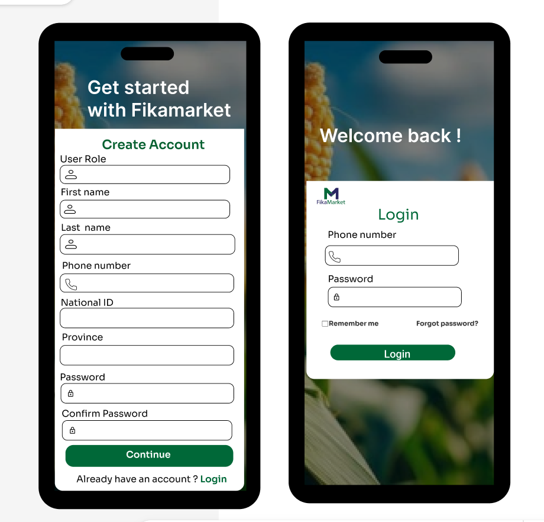
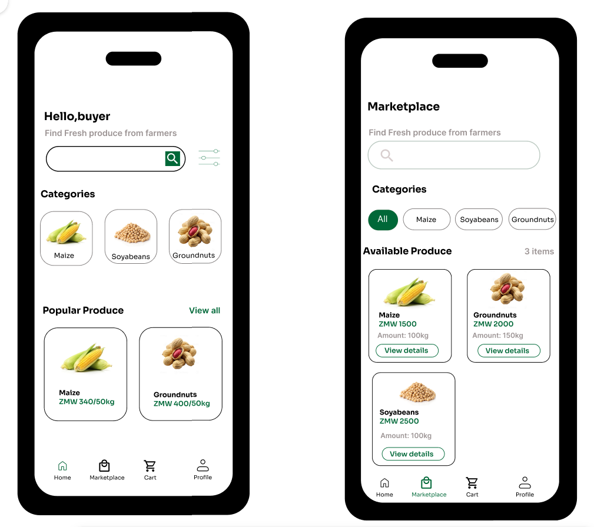

Frontend Mobile
1. Overview
The FikaMarket mobile application is a Flutter-based smartphone application tailored for buyers.
Target Audience & Core Capabilities
Buyers use this application to execute the following core workflows: * Register and log in secure user accounts * Browse available fresh agricultural produce * Add items seamlessly to their digital cart * Place orders and track delivery states * Manage buyer profiles and historical data * Request real-time customer and system help
!!! note "Farmer Connectivity & System Inclusivity" Farmers do not use this mobile application. Farmers with feature phones interact with the FikaMarket ecosystem via USSD channels. This bypasses internet infrastructure constraints to ensure maximum regional accessibility.
2. Tech Stack Matrix
| Component | Technology | Role / Execution Detail |
|---|---|---|
| Framework | Flutter | Cross-platform UI layout engine and widget orchestration |
| Language | Dart | Native strongly-typed execution and layout scripting |
| Platform | Android / iOS | Target compilation platforms for user smartphones |
| Backend API | FastAPI | High-performance Python REST API layer handling logic |
| Database | PostgreSQL | Relational transactional engine storing state data |
3. Project Directory Map
Below is the verified project directory layout mapping out where the core client application modules reside.
Fikamarket/
├── .dart_tool/ # Internal build cache & localized compilation scripts
├── android/ # Android native entry project files, manifests, and build flavors
├── assets/ # Static resource bundles (Images, local icons, Custom Fonts)
│ └── design_mockups/ # Root directory for storing interface layouts and screenshot files
├── build/ # Binaries, apks, and bundles compiled during generation
├── ios/ # iOS native runner, schemes, and provisioning entitlements
├── linux/ # Native desktop Linux packaging configuration files
├── macos/ # Native macOS desktop pipeline infrastructure
├── web/ # Browser responsive application delivery bundles
├── windows/ # Native Windows desktop application configurations
├── lib/ # Active developer project workspace (Dart Source Code)
│ ├── models/ # Core local models mapping payload schemas
│ │ ├── cart_model.dart # Localized state engine for shopping cart mutations
│ │ ├── product_item.dart # Property definitions for marketplace produce items
│ │ └── user_profile.dart # Structural properties defining verified buyers
│ ├── screens/ # Target user presentation and interaction layouts
│ │ ├── buyer_profile_screen.dart # Interactive profile rendering and update fields
│ │ ├── help_form_screen.dart # Customer support ticket submittal form view
│ │ ├── home_screen.dart # Standard splash dashboard and welcome feed
│ │ ├── signup_screen.dart # New buyer account onboarding system flow
│ │ ├── login_screen.dart # Authentication input fields and gateway validation
│ │ ├── main_navigation_screen.dart # Core routing shell holding persisting bottom tabs
│ │ ├── market_place.dart # Dynamic item listings feed grid layout
│ │ └── personal_information_screen.dart # Personal identity update interfaces
│ ├── services/ # Backend API abstraction hooks and HTTP data consumers
│ └── main.dart # Global initial execution setup and application loop runner
├── .gitignore # Specified items excluded from standard source version control
├── .metadata # Automatically managed Flutter tracking parameter data
├── analysis_options.yaml # Code style configuration lint rules
├── pubspec.lock # Explicit snapshots specifying absolute dependent versions
├── pubspec.yaml # Active manifest listing third-party asset libraries
└── README.md # Basic markdown landing instructions document
4. Architecture Layers
The FikaMarket client code relies on three main architecture levels to guarantee a clean separation of concerns:
| Layer | Primary Engineering Purpose |
|---|---|
| Models | Formulates app-wide data payloads (such as products, users, and shopping carts) into strongly typed entities. |
| Screens | Contains the presentational layout widgets providing the active user interface for buyers. |
| Services | Executes explicit network API request payloads out to the FikaMarket centralized cloud infrastructure. |
System Execution Workflow Dataflow
[ Buyer UI Interaction ]
↓
Flutter Mobile App Screens
↓
Data Services Layer (REST API)
↓
FikaMarket FastAPI
↓
Central PostgreSQL Database
5. Core Interface Components & UI Layout Designs
Here is how the application layout translates into code modules, alongside live mobile design previews.
5.1 Account Onboarding & Security Gateway
- Routing Shell: Controlled globally inside
main_navigation_screen.dart. It hosts the core scaffold layout and controls bottom navigation tabs. - Authentication Modules: Handled safely across
login_screen.dartandsignup_screen.dart.

5.2 Home page & Marketplace Browsing
- Buyer Portal View: This is the main screen the buyer sees after logging in.
-
Marketplace Discovery Grid: Buyers browse and query active produce items using
market_place.dart.
5.3 Buyer Account Profile & Help Desk
- Profile Management: Split across
buyer_profile_screen.dartandpersonal_information_screen.dartto separate preferences from core account records.
6. Secure Infrastructure Standards
The client application connects securely via API layers and never accesses the transactional database engines directly.
- User Authentication: Enforces explicit state check validations.
- Local Security Scaffolds: Stores active secure tokens using low-level device security primitives (Keychain on iOS and Keystore on Android engines).
- Sanitized Inputs: Strips problematic characters during string evaluation to neutralize execution injection threats.
- Encrypted API Payload Handshakes: Leverages HTTPS and SSL parameters to prevent traffic eavesdropping.
For complete infrastructural analysis, review the official Security Architecture Document.
7. Operational Onboarding Setup
Prerequisites Verification
- Stable deployment of the Flutter SDK
- Dart Runtime Framework environment pathing
- Git version management core CLI tools
- Initialized installation of Android Studio (with an active virtual emulator machine) or Apple Xcode
Initial Local Project Construction
# Step 1: Clone the active source management tracking repository
git clone <repository-url>
# Step 2: Navigate inside your local project home workspace root
cd fikamarket
# Step 3: Fetch structural configuration updates and runtime libraries
flutter pub get
# Step 4: Run configuration framework sanity checking validation
flutter doctor
# Step 5: Initialize the local debugging application inside your active emulator target
flutter run
8. Development Troubleshooting
| Identified Breakage | Root Resolution Path |
|---|---|
| Dependent libraries fail to compile | Force an updating structural fetch by executing flutter pub get via shell |
| Flutter environment errors out | Execute flutter doctor to find missing toolchain components or paths |
| Backend network API payload fails | Confirm connectivity parameters, base address paths, and FastAPI health states |
| Device virtualization emulator misses initialization | Check virtualization engine settings and disk parameters in Android Studio/Xcode |
9. Channel Pipelines: Farmer USSD
Farmers utilizing basic feature phones don't download the Flutter code project. Instead, their cellular endpoints use automated USSD service lines, ensuring operational reliability even on simple networks.
Farmer (Feature Phone)
↓
USSD Protocol Broadcast
↓
Africa's Talking Gateway Routing
↓
FikaMarket FastAPI Engine
↓
Central Production Database
How the USSD Code Works
- Dialing: The farmer dials a unique shortcode (
*384#) on their feature phone. - Gateway: The mobile phone network sends this request to the Africa's Talking Gateway.
- API Call: The gateway converts the request and sends a standard HTTP message to our FastAPI Backend.
- Database: The backend saves or reads the crop data from our PostgreSQL Database and sends a text menu back to the farmer.
USSD Screen Flow
Here is what the farmer sees on their screen when they use the service:
Main Menu:
Welcome to FikaMarket!
1. Register as Farmer
2. Sell My Produce
3. Check Market prices
4. Get Help
After Selecting Option 2 (Sell My Produce):
Select Crop Type:
1. Maize
2. Soyabeans
3. Groundnuts
After Selecting Option 1 (Maize):
Enter quantity in 50kg bags:
[ User types: 20 ]